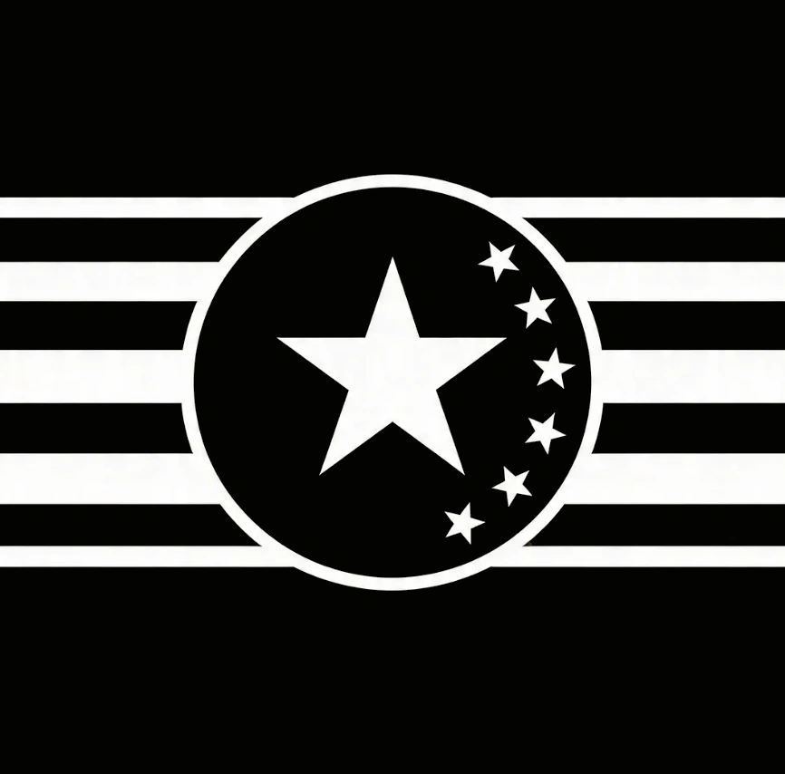

L'EMPIRE DE KUAT
FLOTTE AQUIS 7E ARMEE • CENTRE TACTIQUE SUPRÊME
AFFILIATION : CONSEIL SOUVERAIN DE KUAT
STATUT DES TROUPES : SYNCHRONISATION FLOTTE AQUIS 7E ARMEE EN COURS
DISCORD : discord.gg/gP6PTu6hmz
STATUT DES TROUPES : SYNCHRONISATION FLOTTE AQUIS 7E ARMEE EN COURS
DISCORD : discord.gg/gP6PTu6hmz
█